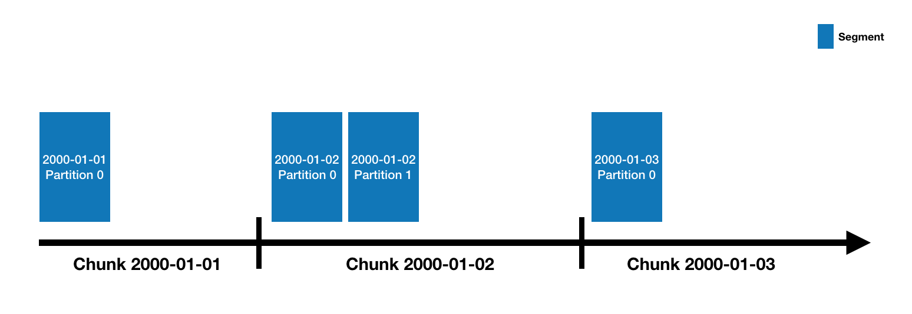

Looking for the latest stable documentation?
Druid data is stored in "datasources", which are similar to tables in a traditional RDBMS. Each datasource is partitioned by time and, optionally, further partitioned by other attributes. Each time range is called a "chunk" (for example, a single day, if your datasource is partitioned by day). Within a chunk, data is partitioned into one or more "segments". Each segment is a single file, typically comprising up to a few million rows of data. Since segments are organized into time chunks, it's sometimes helpful to think of segments as living on a timeline like the following:

A datasource may have anywhere from just a few segments, up to hundreds of thousands and even millions of segments. Each segment starts life off being created on a MiddleManager, and at that point, is mutable and uncommitted. The segment building process includes the following steps, designed to produce a data file that is compact and supports fast queries:
Periodically, segments are published (committed). At this point, they are written to deep storage, become immutable, and move from MiddleManagers to the Historical processes. An entry about the segment is also written to the metadata store. This entry is a self-describing bit of metadata about the segment, including things like the schema of the segment, its size, and its location on deep storage. These entries are what the Coordinator uses to know what data should be available on the cluster.
For details on the segment file format, please see segment files.
For details on modeling your data in Druid, see schema design.
Segments all have a four-part identifier with the following components:
segmentGranularity specified
at ingestion time).For example, this is the identifier for a segment in datasource clarity-cloud0, time chunk
2018-05-21T16:00:00.000Z/2018-05-21T17:00:00.000Z, version 2018-05-21T15:56:09.909Z, and partition number 1:
clarity-cloud0_2018-05-21T16:00:00.000Z_2018-05-21T17:00:00.000Z_2018-05-21T15:56:09.909Z_1
Segments with partition number 0 (the first partition in a chunk) omit the partition number, like the following example, which is a segment in the same time chunk as the previous one, but with partition number 0 instead of 1:
clarity-cloud0_2018-05-21T16:00:00.000Z_2018-05-21T17:00:00.000Z_2018-05-21T15:56:09.909Z
You may be wondering what the "version number" described in the previous section is for. Or, you might not be, in which case good for you and you can skip this section!
It's there to support batch-mode overwriting. In Druid, if all you ever do is append data, then there will be just a single version for each time chunk. But when you overwrite data, what happens behind the scenes is that a new set of segments is created with the same datasource, same time interval, but a higher version number. This is a signal to the rest of the Druid system that the older version should be removed from the cluster, and the new version should replace it.
The switch appears to happen instantaneously to a user, because Druid handles this by first loading the new data (but not allowing it to be queried), and then, as soon as the new data is all loaded, switching all new queries to use those new segments. Then it drops the old segments a few minutes later.
Segments can be either available or unavailable, which refers to whether or not they are currently served by some Druid server process. They can also be published or unpublished, which refers to whether or not they have been written to deep storage and the metadata store. And published segments can be either used or unused, which refers to whether or not Druid considers them active segments that should be served.
Putting these together, there are five basic states that a segment can be in:
The sixth state in this matrix, "unpublished and unavailable," isn't possible. If a segment isn't published and isn't being served then does it really exist?
Indexing is the mechanism by which new segments are created, and handoff is the mechanism by which they are published and begin being served by Historical processes. The mechanism works like this on the indexing side:
And like this on the Coordinator / Historical side:
In most ingestion methods, this work is done by Druid MiddleManager processes. One exception is Hadoop-based ingestion, where this work is instead done using a Hadoop MapReduce job on YARN (although MiddleManager processes are still involved in starting and monitoring the Hadoop jobs).
Once segments have been generated and stored in deep storage, they will be loaded by Druid Historical processes. Some Druid ingestion methods additionally support real-time queries, meaning you can query in-flight data on MiddleManager processes before it is finished being converted and written to deep storage. In general, a small amount of data will be in-flight on MiddleManager processes relative to the larger amount of historical data being served from Historical processes.
See the Design page for more details on how Druid stores and manages your data.
The table below lists Druid's most common data ingestion methods, along with comparisons to help you choose the best one for your situation.
| Method | How it works | Can append and overwrite? | Can handle late data? | Exactly-once ingestion? | Real-time queries? |
|---|---|---|---|---|---|
| Native batch | Druid loads data directly from S3, HTTP, NFS, or other networked storage. | Append or overwrite | Yes | Yes | No |
| Hadoop | Druid launches Hadoop Map/Reduce jobs to load data files. | Overwrite | Yes | Yes | No |
| Kafka indexing service | Druid reads directly from Kafka. | Append only | Yes | Yes | Yes |
| Tranquility | You use Tranquility, a client side library, to push individual records into Druid. | Append only | No - late data is dropped | No - may drop or duplicate data | Yes |
Druid is a distributed data store, and it partitions your data in order to process it in parallel. Druid datasources are always partitioned first by time based on the segmentGranularity parameter of your ingestion spec. Each of these time partitions is called a time chunk, and each time chunk contains one or more segments. The segments within a particular time chunk may be partitioned further using options that vary based on the ingestion method you have chosen.
All Druid datasources are partitioned by time. Each data ingestion method must acquire a write lock on a particular time range when loading data, so no two methods can operate on the same time range of the same datasource at the same time. However, two data ingestion methods can operate on different time ranges of the same datasource at the same time. For example, you can do a batch backfill from Hadoop while also doing a real-time load from Kafka, so long as the backfill data and the real-time data do not need to be written to the same time partitions. (If they do, the real-time load will take priority.)
For tips on how partitioning can affect performance and storage footprint, see the schema design page.
Druid is able to summarize raw data at ingestion time using a process we refer to as "roll-up". Roll-up is a first-level aggregation operation over a selected set of "dimensions", where a set of "metrics" are aggregated.
Suppose we have the following raw data, representing total packet/byte counts in particular seconds for traffic between a source and destination. The srcIP and dstIP fields are dimensions, while packets and bytes are metrics.
timestamp srcIP dstIP packets bytes
2018-01-01T01:01:35Z 1.1.1.1 2.2.2.2 100 1000
2018-01-01T01:01:51Z 1.1.1.1 2.2.2.2 200 2000
2018-01-01T01:01:59Z 1.1.1.1 2.2.2.2 300 3000
2018-01-01T01:02:14Z 1.1.1.1 2.2.2.2 400 4000
2018-01-01T01:02:29Z 1.1.1.1 2.2.2.2 500 5000
2018-01-01T01:03:29Z 1.1.1.1 2.2.2.2 600 6000
2018-01-02T21:33:14Z 7.7.7.7 8.8.8.8 100 1000
2018-01-02T21:33:45Z 7.7.7.7 8.8.8.8 200 2000
2018-01-02T21:35:45Z 7.7.7.7 8.8.8.8 300 3000
If we ingest this data into Druid with a queryGranularity of minute (which will floor timestamps to minutes), the roll-up operation is equivalent to the following pseudocode:
GROUP BY TRUNCATE(timestamp, MINUTE), srcIP, dstIP :: SUM(packets), SUM(bytes)
After the data above is aggregated during roll-up, the following rows will be ingested:
timestamp srcIP dstIP packets bytes
2018-01-01T01:01:00Z 1.1.1.1 2.2.2.2 600 6000
2018-01-01T01:02:00Z 1.1.1.1 2.2.2.2 900 9000
2018-01-01T01:03:00Z 1.1.1.1 2.2.2.2 600 6000
2018-01-02T21:33:00Z 7.7.7.7 8.8.8.8 300 3000
2018-01-02T21:35:00Z 7.7.7.7 8.8.8.8 300 3000
The rollup granularity is the minimum granularity you will be able to explore data at and events are floored to this granularity.
Hence, Druid ingestion specs define this granularity as the queryGranularity of the data. The lowest supported queryGranularity is millisecond.
The following links may be helpful in further understanding dimensions and metrics:
For tips on how to use rollup in your Druid schema designs, see the schema design page.
Druid supports two roll-up modes, i.e., perfect roll-up and best-effort roll-up. In the perfect roll-up mode, Druid guarantees that input data are perfectly aggregated at ingestion time. Meanwhile, in the best-effort roll-up, input data might not be perfectly aggregated and thus there can be multiple segments holding the rows which should belong to the same segment with the perfect roll-up since they have the same dimension value and their timestamps fall into the same interval.
The perfect roll-up mode encompasses an additional preprocessing step to determine intervals and shardSpecs before actual data ingestion if they are not specified in the ingestionSpec. This preprocessing step usually scans the entire input data which might increase the ingestion time. The Hadoop indexing task always runs with this perfect roll-up mode.
On the contrary, the best-effort roll-up mode doesn't require any preprocessing step, but the size of ingested data might be larger than that of the perfect roll-up. All types of streaming indexing (e.g., kafka indexing service) run with this mode.
Finally, the native index task supports both modes and you can choose either one which fits to your application.
Druid can insert new data to an existing datasource by appending new segments to existing segment sets. It can also add new data by merging an existing set of segments with new data and overwriting the original set.
Druid does not support single-record updates by primary key.
Updates are described further at update existing data.
Compaction is a type of overwrite operation, which reads an existing set of segments, combines them into a new set with larger but fewer segments, and overwrites the original set with the new compacted set, without changing the data that is stored.
For performance reasons, it is sometimes beneficial to compact a set of segments into a set of larger but fewer segments, as there is some per-segment processing and memory overhead in both the ingestion and querying paths.
For compaction documentation, please see tasks.
Druid supports retention rules, which are used to define intervals of time where data should be preserved, and intervals where data should be discarded.
Druid also supports separating Historical processes into tiers, and the retention rules can be configured to assign data for specific intervals to specific tiers.
These features are useful for performance/cost management; a common use case is separating Historical processes into a "hot" tier and a "cold" tier.
For more information, please see Load rules.
Druid supports permanent deletion of segments that are in an "unused" state (see the Segment states section above).
The Kill Task deletes unused segments within a specified interval from metadata storage and deep storage.
For more information, please see Kill Task.